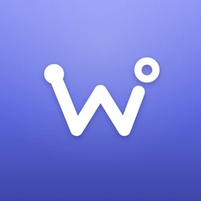
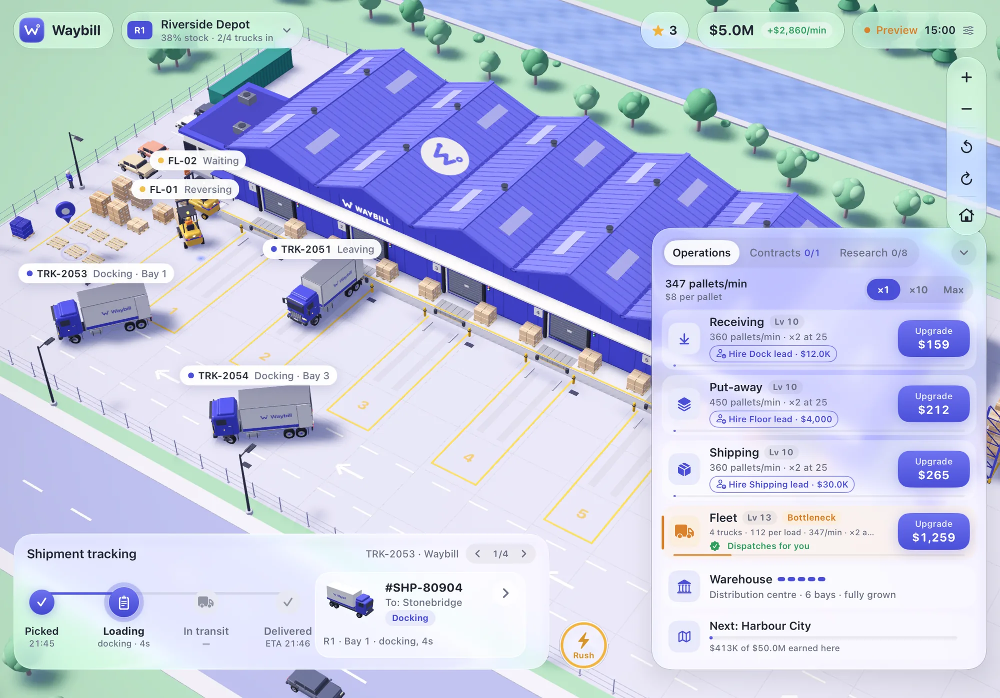
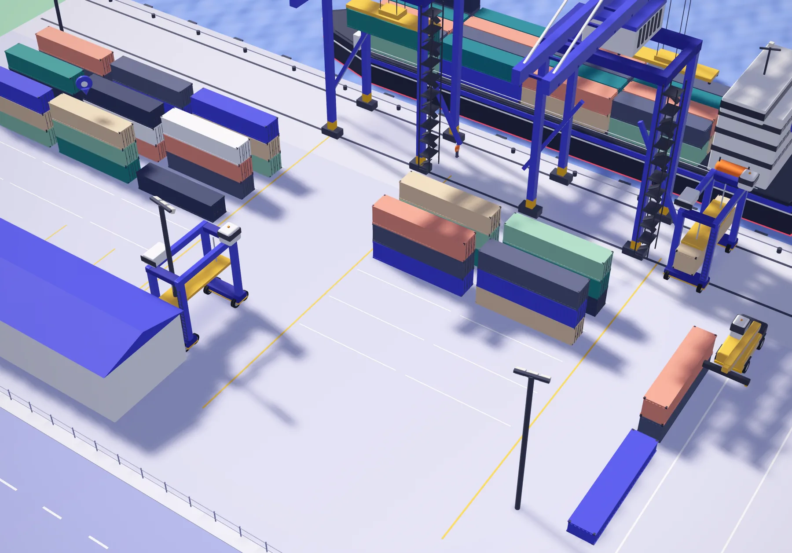
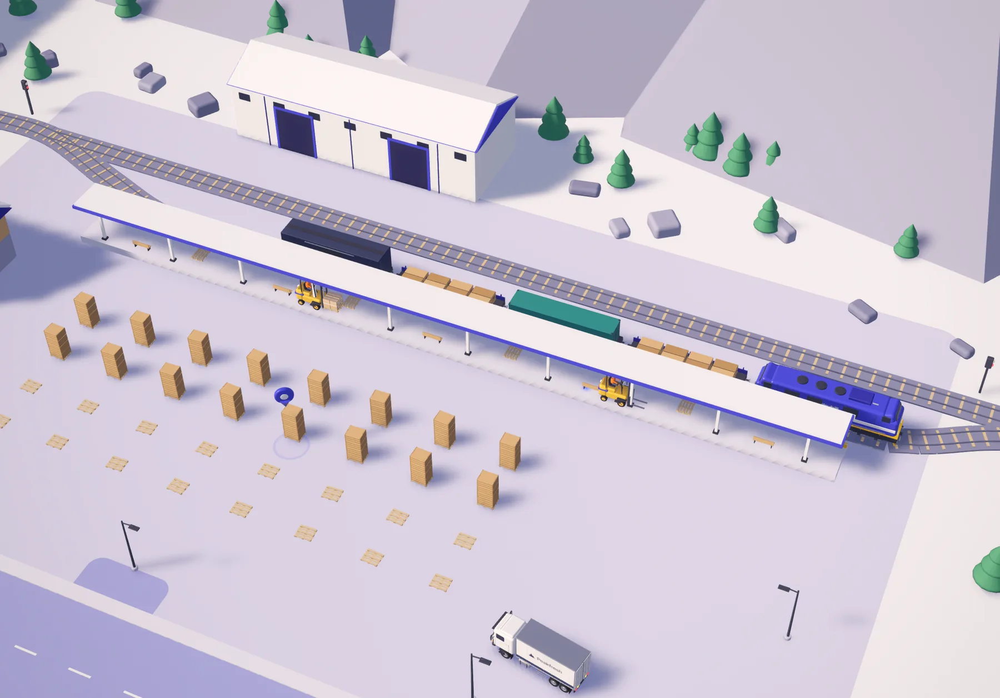
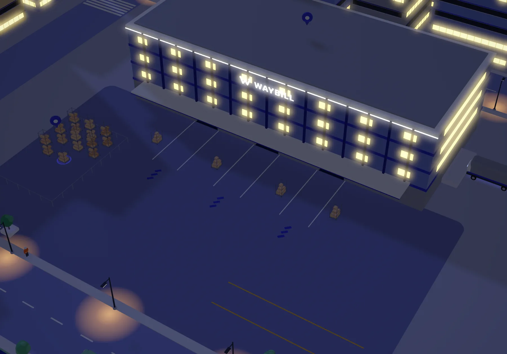
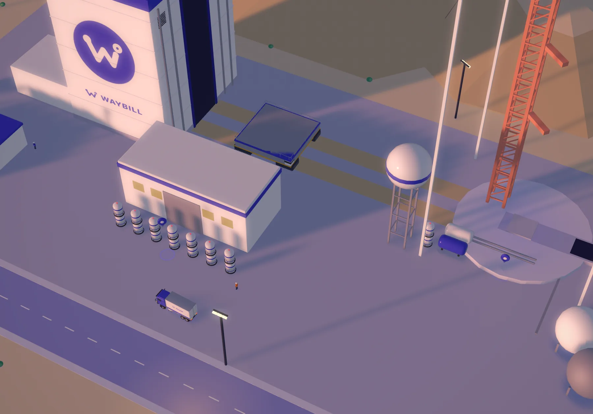

Waybill
A logistics idle game in toy-scale 3D.

- Five regions. Riverside, Harbour City, Granite Pass, Metro and finally Orbit.
- Trucks that really drive. They follow real turning circles, reverse into bays and never overlap.
- All made in code. Every model, plus my own edge smoothing and shading.
- Real time. Day and night follow the clock; the depot keeps working while you’re away.




Built with RealityKit, SwiftUI and Metal, balanced with a Python simulation.
Next: Home Hub